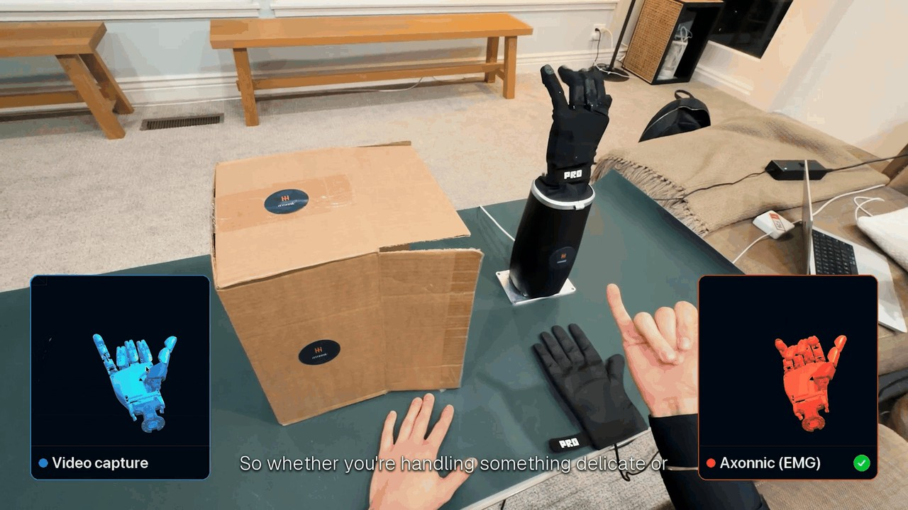

手藏起来，信号仍从前臂来
机器人团队拍摄熟练工人工作时，通常能看见手的位置，却很难仅凭画面区分轻握和用力。Axonnic把采集位置放到前臂：工人穿上肌电套筒，手掌和手指保持自由。十月三十日Product Hunt的作者演示让手伸进盒子，画面遮挡后仍显示解码的手指运动，并展示由同类信号驱动机器人手。这里可确认的是作者公开了这样的演示与数据采集方式；不能将遮挡演示直接换算成缝纫或装配的自动化成功率。它适合讨论如何补足示范数据，而非把一段视频当成通用机器人能力。
Axonnic · 硬件 · PH发现 · 作者演示

机器人团队拍摄熟练工人工作时，通常能看见手的位置，却很难仅凭画面区分轻握和用力。Axonnic把采集位置放到前臂：工人穿上肌电套筒，手掌和手指保持自由。十月三十日Product Hunt的作者演示让手伸进盒子，画面遮挡后仍显示解码的手指运动，并展示由同类信号驱动机器人手。这里可确认的是作者公开了这样的演示与数据采集方式；不能将遮挡演示直接换算成缝纫或装配的自动化成功率。它适合讨论如何补足示范数据，而非把一段视频当成通用机器人能力。
官网把流程分成采集、对齐、训练和部署。肌电与视频、手部姿态组成针对任务的数据集，人的示范再映射到机器人的动作空间；部署时机器人依赖自身传感器，套筒退出运行链。这个安排有明确的工程含义：团队不必给每台机器人安装人体传感器，却必须处理人手与机器人手结构不同的问题。肌肉活动和推断用力是额外监督信息，不等于传感器直接测得每个指尖的接触力。采购者需要知道哪些输出是测量、哪些是模型估计，并检查不同材料和工具下是否仍保持对应关系。
Axonnic官网给出以Apple Vision Pro手部追踪作对照的自测片段，并说明重新穿戴后的校准过程。另一个片段把四天前训练的解码器用于新的记录；两种条件并不相同，不能把其中较好的误差数字当作所有人的表现。官网也展示十月二十四日记录的扳机用力演示，先以力手套作参照，再去掉手套。对操作人员来说，套筒移位、当天穿戴和手部遮挡都是采集流程的一部分。合理的采用门槛是让真实工人在目标任务里重复采集，再判断重新校准是否打断工作，而非只比较一张规格表。
Product Hunt作者表示套筒已在发货，并与首批设计伙伴开展付费试点；官网则介绍制造业意向书和建筑现场采集。意向书、付费试点和稳定运行的机器人生产线是不同阶段，当前材料没有给出可核对的产量提升、部署成本或对照实验。数据归属也按项目合同约定，企业应把原始记录、训练用途和跨客户模型使用范围写清。Axonnic的产品判断因此落在采集服务是否适合具体操作：如果额外信号能减少失败示范或提高策略迁移质量，它才有理由加入现有视频流程；当前证据尚未回答这一效果问题。